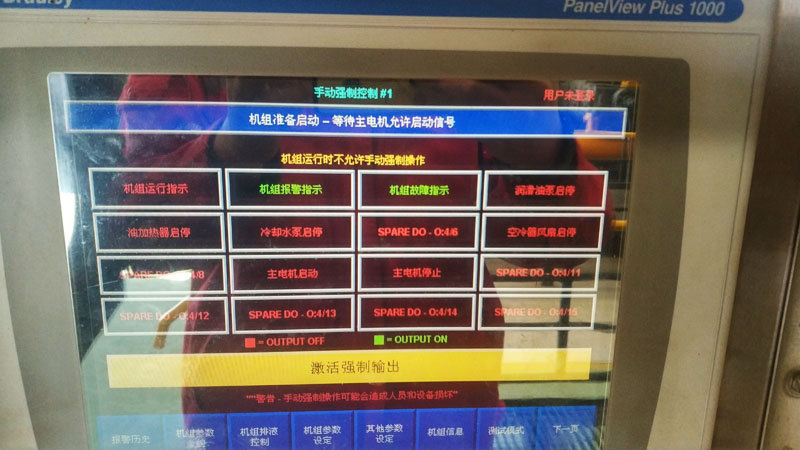
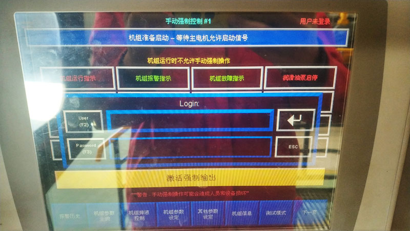
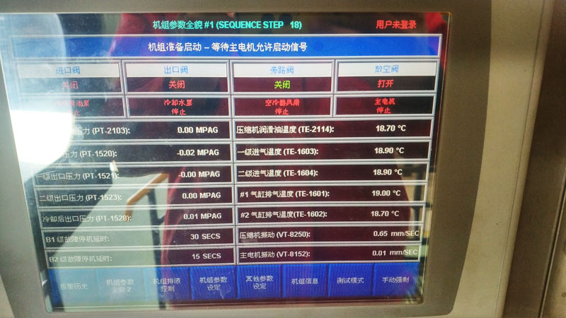
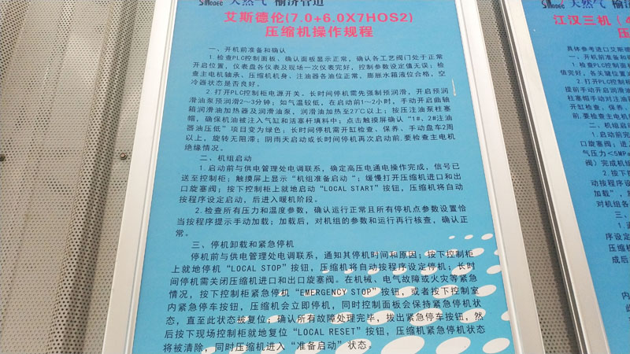
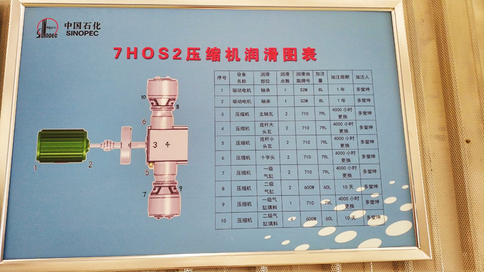

1.1.1工作任务：与相关人员配合完成注气压缩机组的启动。
1.1.2施工常用工具：F扳手1把、棉纱、盘车棒（1200mm）1根、250mm活动扳手1把。
1.1.3操作流程
1．操作前准备：
（1）穿戴劳保服装，主要包括：安全帽、防静电服、防静电鞋、防滑手套、耳塞、耳罩。
（2）准备相关操作工具：对讲机1台，电量在50%以上。
（3）施工前检查项目、方法、步骤及重点
1）检查PLC控制面板，排除面板显示的故障；即使长时间不运行压缩机，控制盘也不要断电，避免PLC电池耗尽，造成程序丢失；
2）检查各工艺阀门是否处于正常位置，主要有：机组总放空阀是否打开，二级排气放空阀是否关闭；
3）检查仪表盘各仪表及现场一次仪表是否完好，确认控制参数设定值无误；
4）检查主电机轴承油位、压缩机机身油位、注油器油位及膨胀水箱液位,应补足至1/2—2/3液位计高度之间；
5）采用手动强制方式对空冷器进行试运，检查空冷器风扇皮带涨紧度是否合适，如皮带打滑应对张紧轮进行调整；
6）打开PLC控制柜电源开关。若长时间停机或第一次启动，应进入PLC触摸屏“手动强制”界面，点选“进行手动强制”按键后弹出“Login”对话框，在“user”中填入“exterran”,在“password”中填入“8834”后点击回车键，点击“激活强制输出”按键后分别点选“启动润滑油泵”、“启动加热器”按键，强制进行预润滑操作，同时观察预润滑马达运转情况，预润滑2-3分钟。完成手动预润滑后，进入“手动强制”界面，点击“退出强制输出”按键恢复强制输出至正常启动状态。在气温较低时，启动机组前1-2小时，手动开启曲轴箱润滑油加热器及润滑油泵，对润滑油进行加热，启动润滑油温度为27℃以上。
7）点击触摸屏进入“机组信息”界面，点击“PLC输入”按键，查看“1#、2#注油器油压低”项目是否为红色，如果为红色应手动摇动气缸强制注油泵，并促使压力开关闭合，从触摸屏上由红色变为绿色即可停止；
8）阴雨天启动或长时间停机（＞15天）再次启动前,要检查主电机绝缘情况；
9）长时间停机（停机一周以上）或对机组进行开缸检查、保养后需要盘车；手动盘车2周以上，确认旋转无阻滞现象；
10）缓慢打开压缩机进口和出口旋塞阀。
11）对机柜间对应的MCC柜进行检查，主要内容有：机柜供电正常、各指示灯、按钮、开关处于正常状态。
2.规范操作步骤
压缩机组启动操作：
（1）启动前与供电管理处电调联系，确定高压电通电操作完成，信号已送至控制柜；触摸屏上显示“机组准备启动”；
（2）按下控制柜上就地启动“LOCAL START”按钮，压缩机将自动按程序设定启动：
按下启动按钮 →机组吹扫（打开放空阀→打开入口阀→机组主工艺管线吹扫→旁通阀打开→回流线吹扫→放空阀关闭→入口阀关闭→完成吹扫）→压缩机预润滑油泵启动→预润滑油压力建立→启动辅助水泵→启动空冷器马达→打开压缩机组出口阀→启动主马达→机组运行→打开机组入口阀→机组空载运行（暖机）→润滑油温度提高至32℃→机组允许加载（请向中控申请加载）
（3）操作人应检查所有压力和温度参数（见机组巡回检查操作中检查项目和参数），以确认压缩机运行正常且所有机组保护点参数设置恰当；
（4）按照程序，压缩机在启动后进入暖机阶段。暖机完成后，压缩机按照程序提示手动加载，在得到中控室加载允许回复后点击控制屏“加载”按键。
（5）加载后，操作人员应对机组的参数和运行情况进行检查（见机组巡回检查操作中检查项目和参数），并对机组橇块内及所有附属设施进行验漏，确认正常后方可离开。
（6）记录机组开机及加载时间并汇报。
7.0+6.0×7HOS2压缩机组操作界面与规程





4RDSA-2/YB710-6压缩机组操作
2.1项目一：压缩机组启动
2.1.1工作任务：与相关人员配合完成注气压缩机组的启动。
2.1.2施工常用工具：F扳手1把、棉纱、盘车棒（1200mm）1根、250mm活动扳手1把。
2.1.3操作流程
1．操作前准备：
（1）穿戴劳保服装，主要包括：安全帽、防静电服、防静电鞋、防滑手套、耳塞、耳罩。
（2）准备相关操作工具：对讲机1台，电量在50%以上。
（3）操作前检查项目、方法、步骤及重点
1）检查PLC控制面板，排除面板显示的故障；紧急停车按钮处于复位状态；
2）检查各工艺阀门是否处于正常位置，确认站内外与机组相关流程导通；
3）检查仪表盘各仪表及现场一次仪表是否完好，确认控制参数设定值无误；
4）检查压缩机机身油位、注油器油位及膨胀水箱液位,应补足至1/2—2/3液位计高度之间；
5）通过辅助设备测试界面启动空冷器电机，检查空冷器状态是否良好；
6）打开PLC控制柜电源开关。若长时间停机或第一次启动，应进入PLC触摸屏界面，手动进行预润滑操作，同时观察预润滑油泵运转情况，预润滑2-5分钟。完成手动预润滑后，恢复至正常启动状态。
7）手动对注油器进行泵油，观察窗均匀出油后再泵油10次，注意泵油速度不可过快以免造成爆破片破损卸压；
8）手动盘车2周以上，确认旋转无阻滞现象 (确保盘车时预润滑油泵运行) ；
9）阴雨天启动或长时间停机（＞15天）再次启动前，要检查主电机绝缘情况；
10）加/卸载旋钮处于卸载位置；远程/机旁旋钮处于机旁位置；
11)当环境温度较低时，机身润滑油温度低于20℃时，应首先对润滑油进行加热。打开辅助部件测试画面将预润滑油泵打开，待润滑油温度升至20℃以上时，方可启动机组。
2.规范操作步骤
（1）进入PLC触摸屏界面（返回主菜单后进入辅助部件测试），手动打开进气旁通阀门和放空阀门，（进气压力＜5MPa时关闭进气旁通阀，打开放空阀持续约5-6秒钟后关闭放空阀）完成机组的吹扫；
（2）机组吹扫完毕后，启动前与供电单位（金堤变电站）联系“622回路”送电；
（3）首先按下控制柜上的“复位”按钮，然后再按下控制柜上“就地启动”按钮，压缩机将自动按程序设定启动；（注：只有按下“就地启动”按钮后，金堤变电站才能给“622回路”送电，所以操作过程中应严格注意要电与按下“就地启动”按钮的时机。）
（4）待压缩机启动即进入机组升温暖机阶段，当控制柜屏幕上显示“允许加载”字样，应与中控室人员确认井组及工艺系统可以加载，遂旋转加载/卸载旋钮至加载方向，机组加载；
（5）加载后，操作人员应对机组的参数和运行情况进行检查（见机组巡回检查操作中检查项目和参数），并对机组橇块内及所有附属设施进行验漏，确认正常后方可离开。
（6）记录开机和加载时间并汇报。
4RDSA-2/YB710-6压缩机组操作界面与规程